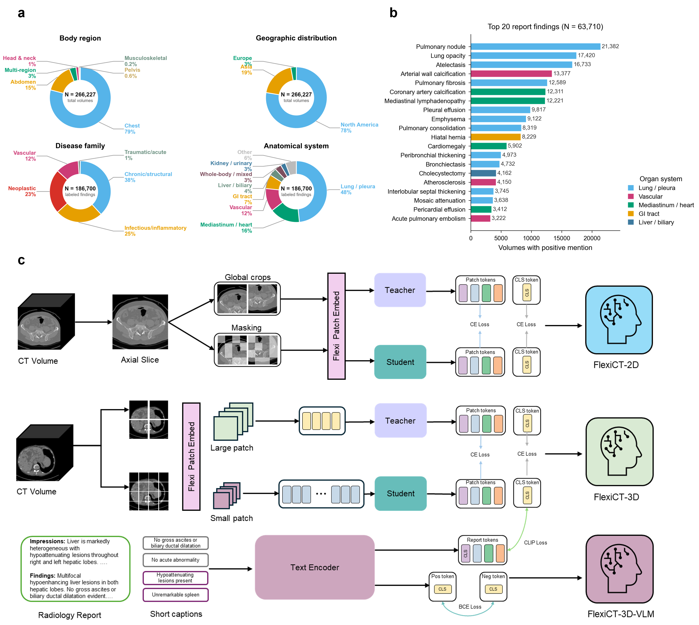
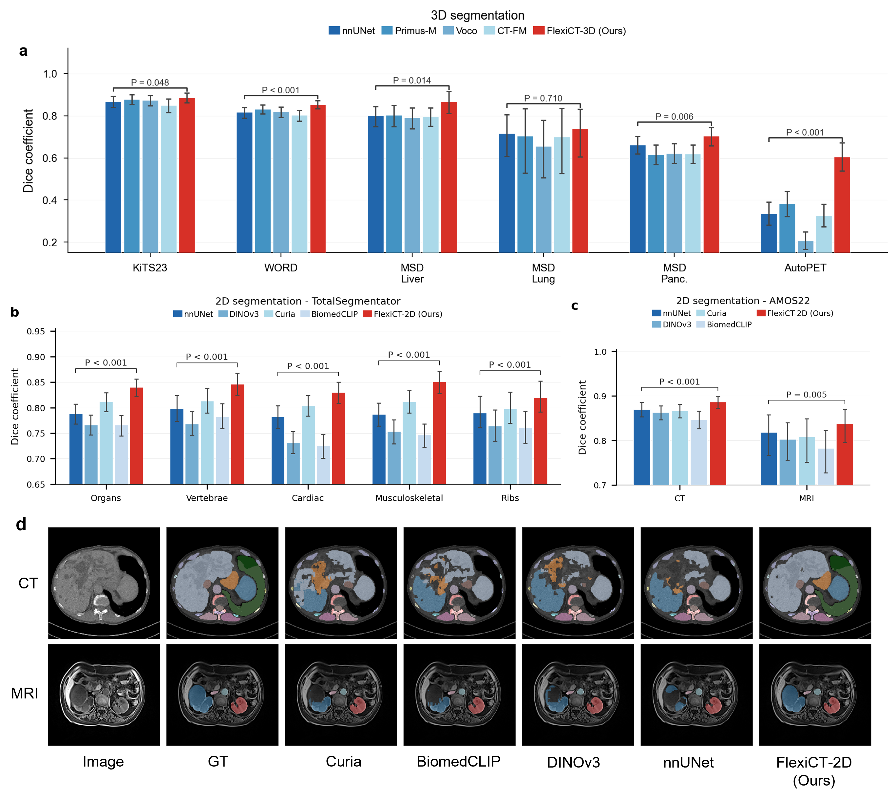

Whole-body PCA Feature Maps
Triplanar PCA projections visualize dense patch features learned by FlexiCT, revealing organ boundaries and spatially coherent anatomical regions without task-specific supervision.
CT foundation model family
Universal CT Representations from Anatomy to Disease Phenotype through Agglomerative Pretraining
1Georgia Institute of Technology 2Emory University 3Duke University 4University of Florida
†These authors contributed equally to this work. *Corresponding authors: jebaciak@mse.ufl.edu, xiaofeng.yang@emory.edu
FlexiCT is trained on 266,227 CT volumes from 56 public datasets and evaluated across the clinical CT workflow: segmentation, registration, classification, tumor phenotype retrieval, and vision-language understanding.
The model family is built through agglomerative continual pretraining. Phase 1 learns slice-level anatomy with a DINO-style self-supervised objective. Phase 2 inflates the encoder into 3D and continues volumetric pretraining. Phase 3 aligns 3D image representations with clinical reports through contrastive language supervision.
This sequential lineage produces three checkpoints: FlexiCT-2D for dense slice-level anatomy, FlexiCT-3D for volumetric reasoning, and FlexiCT-3D-VLM for text-guided disease recognition and cross-modal retrieval.
public CT volumes assembled for pretraining
datasets spanning body regions and disease families
benchmarks across five downstream task families

The demos show how FlexiCT features expose anatomical correspondence, similarity structure, and zero-shot localization behavior directly from pretrained embeddings.
Triplanar PCA projections visualize dense patch features learned by FlexiCT, revealing organ boundaries and spatially coherent anatomical regions without task-specific supervision.
Multi-point similarity maps highlight how reference features propagate across a CT volume, providing a view of the learned representation's anatomical matching behavior.
Dense visual features prompted with point query can localize anatomical or disease-related regions without fitting a new segmentation model.
FlexiCT is evaluated along the hierarchy of CT interpretation, from anatomy and spatial correspondence to disease characterization, phenotype retrieval, and language-grounded clinical reasoning.

This research is supported in part by the National Institutes of Health under Award Number R01EB032680, R01DE033512, R01CA272991, and U54CA274513. The authors acknowledge University of Florida Information Technology Research Computing for computational resources and support provided through the HiPerGator supercomputing cluster.
Please cite the arXiv preprint.
@misc{li2026universalctrepresentations,
title = {Universal CT Representations from Anatomy to Disease Phenotype through Agglomerative Pretraining},
author = {Yuheng Li and Yuan Gao and Haoyu Dong and Yuxiang Lai and Shansong Wang and Mojtaba Safari and James E. Baciak and Xiaofeng Yang},
year = {2026},
eprint = {2605.21906},
archivePrefix = {arXiv},
primaryClass = {cs.CV},
doi = {10.48550/arXiv.2605.21906},
url = {https://arxiv.org/abs/2605.21906}
}